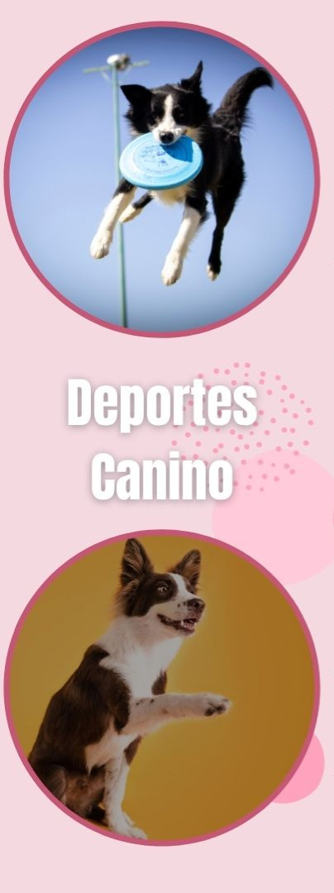

¿Por qué educar a tu perro con nosotros?

Entrenarás de manera correcta con bases sólidas y comprobadas que te convertirán en un gran entrenador de DISC DOG, aprende a manejar el disco con diferentes técnicas, agarres y tiros de fantasía que te llevarán al siguiente nivel. Aprenderás esta fabulosa disciplina llamada Disc Dog y disfruta de los beneficios de ser “Discdogger”, creando un vínculo extraordinario con tu perro. Aprenderás cómo desarrollar una técnica correcta para dominar la competencia de distancia, acumular puntos con la mejor estrategia de juego. Diseñarás un tono de comunicación único, reforzando tu marca personal/corporativa. Desarrollarás rutinas de estilo libre (freestyle) con todos los elementos que tenemos para ti, por ejemplo: vault pierna, espalda y pecho, over lateral frente y de espalda, rebotes cadera, pecho, pie y espalda entre otras. Trabajarás con música para generar una rutina de estilo libre impactante para dejar con la boca abierta a los espectadores y ganar el voto de los jueces. Generarás altos niveles de expectativa a través del manejo de tu perro con discos especiales para él.
Es uno de nuestros lemas y es lo que buscamos transmitir tanto hacia nuestros clientes con sus perros como a nuestros alumnos del curso. Estamos en constante capacitación en distintas áreas del adiestramiento canino y de la modificación del comportamiento animal y buscamos permanentemente adquirir un sólido conocimiento sobre el comportamiento del perro. Priorizamos el respeto y la ética profesional, teniendo como principal objetivo, el bienestar físico y emocional del perro